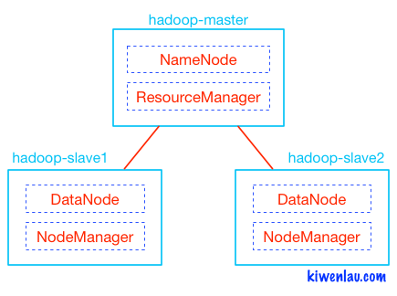
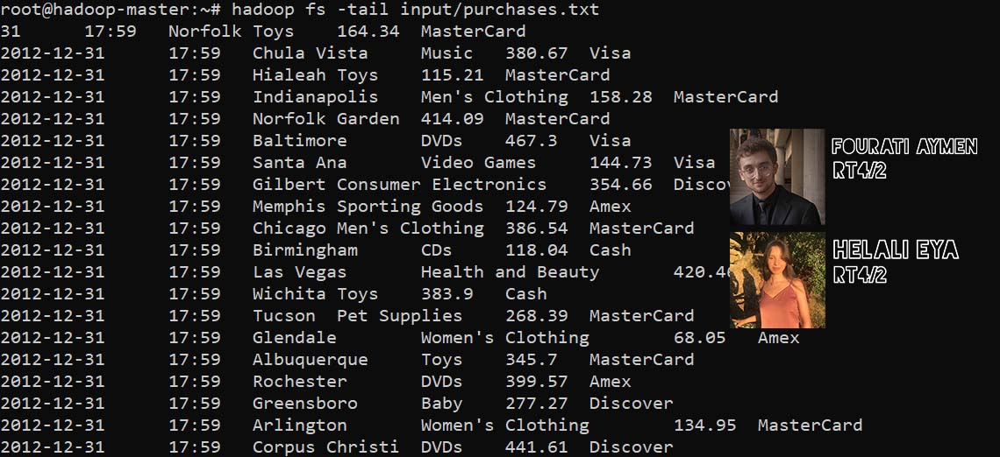
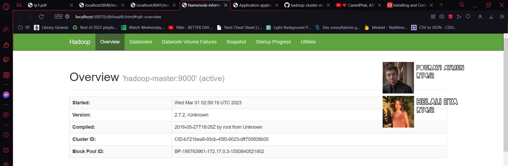
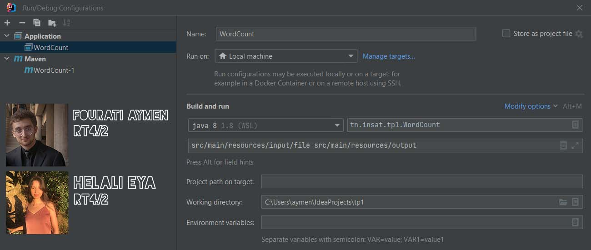
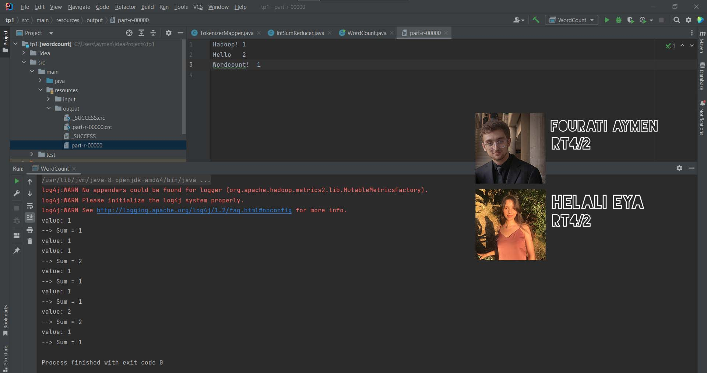
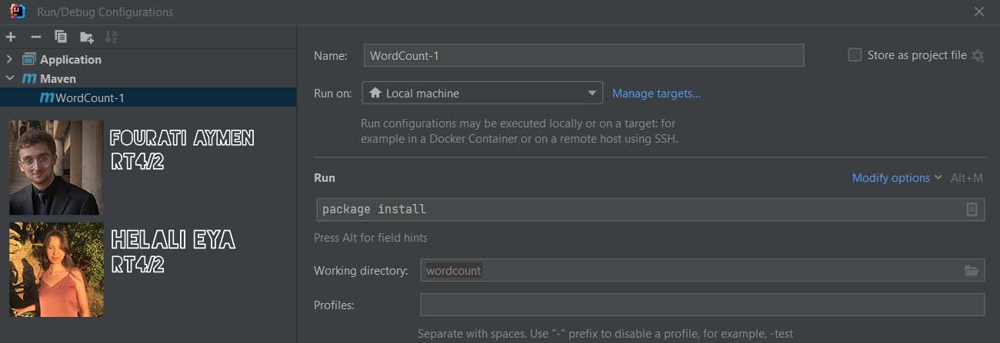
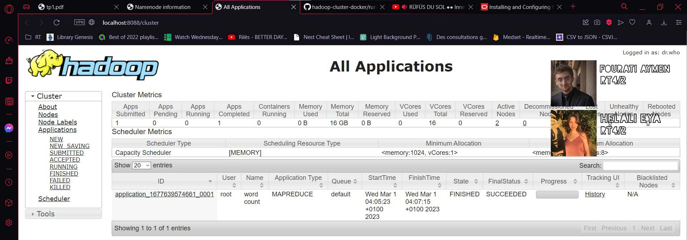

Initiation au framework hadoop et au patron MapReduce, utilisation de docker pour lancer un cluster hadoop de 3 noeuds.

Creation et lancement des trois contenaires :
Hadoop Master
Hadoop slave 1
Hadoop slave 2
Lancement de hadoop et yarn

Affichage du contenu du fichier purchases.txt


Creation d'une configuration de type application

output :

Creation d'un configuration Maven avec une ligne de commande :
package install

Copie du fichier target/wordcount-1.jar vers hadoop-master:/root

Lancement du job map reduce

Affichage des dernières lignes du chier généré output/part-r-00000,


Affiche de la Page web de monitoring des Jobs Map Reduce


Affichage des interfaces webs des noeuds esclaves pour analyzer leurs comportements :